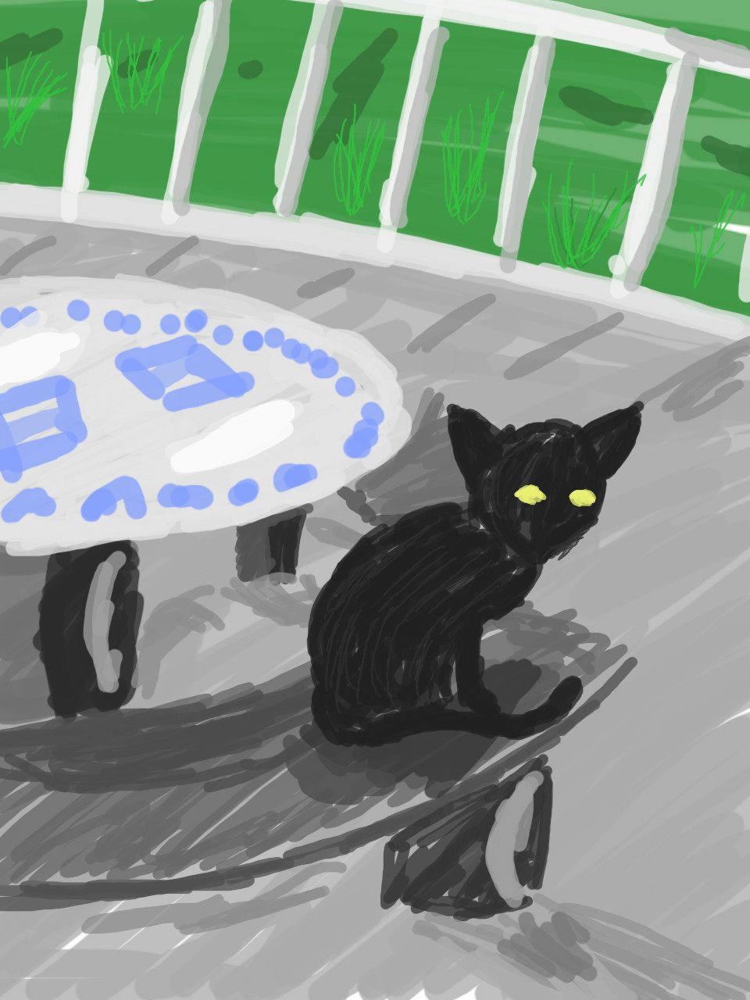
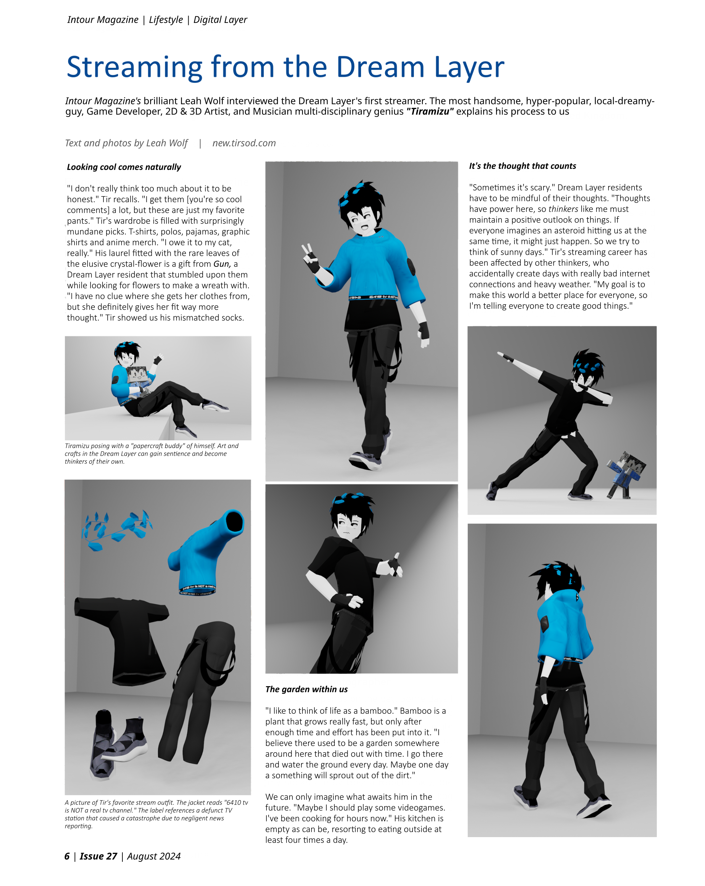

Haven't seen tiramizu stream in a while...
Posted on 2024-01-17
Wonder where he's at? I'd love to know what he's doing, it's been a minute since I've seen him work on some cool project.
Something happen to the sun?
Posted on 2024-01-13
wasn't it extremely bright today? i couldn't go for a walk because of it. i think it's been getting brighter and brighter lately.
Merry Santa Day!
Posted on 2023-12-24
Can't believe he actually did it. That tiramizu guy. He actually made it snow in the city.
Not just that. He SUCCESSFULLY manifested Santa? He's getting a lot of attention lately. Seems like he's gonna
turn into the next big thing and I'm all for it. Maybe he can help us manifest some better things in the dream layer.
Cats everywhere???
Posted on 2023-11-01
Anyone notice this too? There's usually a couple of cats hanging around the cafes and stuff trying to get some food,
but it's getting kind of ridiculous now. I don't know what's up but I've seen like 10 cats in the same place at the same time.

picture of a cat posted outside my window
Tiramizu was on the news!
Posted on 2023-07-12
Did you guys see? that streamer guy from concept city was just featured on a magazine from the real world.
Apparently one journalist called him for an interview and they did a photoshoot with the papercraft guy he drew for himself.
I think it's really cool! The dream layer is getting some recognition!
If you're interested, here's a screenshot of the exact magazine page where he's featured:

thedreamlayer.com is live!
Posted on 2023-06-28
Hey everyone! I'm excited to announce that thedreamlayer.com is now live!
This website is a place where you can find all the latest news and updates for our world.
I got this idea while browsing some websites from the real world (This internet thing is quite the
magical discovery! Thank you so much the research team for making this possible!)
I don't know a lot about programming so I had to get some help from outside. It's a bit
tedious transcribing all that stuff from our message boards but I'm happy with the result. I tried to go for a "forums" look. It's this thing they do
where they post news and make comments and stuff. It should be a good option to keep us communicated and up to date.
Let me know if you run into any issues or if you have any suggestions for the website! I'll try to add more to it as we go =^)
-The Admin (psst, it's actually me, Nick!)